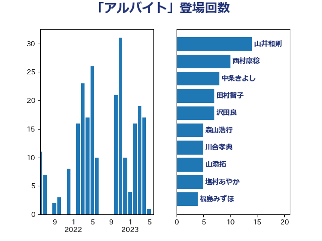

単語「アルバイト」

| 山井和則 | 立憲民主党 | 14 回 |
| 西村康稔 | 自由民主党 | 10 回 |
| 中条きよし | 日本維新の会 | 8 回 |
| 田村智子 | 日本共産党 | 7 回 |
| 沢田良 | 日本維新の会 | 7 回 |
| 森山浩行 | 立憲民主党 | 5 回 |
| 川合孝典 | 国民民主党 | 5 回 |
| 山添拓 | 日本共産党 | 5 回 |
| 塩村あやか | 立憲民主党 | 5 回 |
| 福島みずほ | 社会民主党 | 4 回 |
| 後藤茂之 | 自由民主党 | 4 回 |
| 山口那津男 | 公明党 | 4 回 |
| 加藤勝信 | 自由民主党 | 4 回 |
| 倉林明子 | 日本共産党 | 4 回 |
| 梅村みずほ | 日本維新の会 | 3 回 |
| 末松信介 | 自由民主党 | 3 回 |
| 打越さく良 | 立憲民主党 | 3 回 |
| 大西健介 | 立憲民主党 | 3 回 |
| 吉良よし子 | 日本共産党 | 3 回 |
| 前原誠司 | 国民民主党 | 3 回 |
| 中田宏 | 自由民主党 | 3 回 |
| 遠藤良太 | 日本維新の会 | 2 回 |
| 逢坂誠二 | 立憲民主党 | 2 回 |
| 深澤陽一 | 自由民主党 | 2 回 |
| 榛葉賀津也 | 国民民主党 | 2 回 |
| 柳ヶ瀬裕文 | 日本維新の会 | 2 回 |
| 広瀬めぐみ | 自由民主党 | 2 回 |
| 山田勝彦 | 立憲民主党 | 2 回 |
| 山本香苗 | 公明党 | 2 回 |
| 吉田はるみ | 立憲民主党 | 2 回 |
| 伊藤孝恵 | 国民民主党 | 2 回 |
| 仁比聡平 | 日本共産党 | 2 回 |
| 井上哲士 | 日本共産党 | 2 回 |
| 上田英俊 | 自由民主党 | 2 回 |
| 齋藤健 | 自由民主党 | 1 回 |
| 鬼木誠 | 立憲民主党 | 1 回 |
| 須藤元気 | 無所属 | 1 回 |
| 阿部司 | 日本維新の会 | 1 回 |
| 鈴木義弘 | 国民民主党 | 1 回 |
| 鈴木庸介 | 立憲民主党 | 1 回 |
| 野田聖子 | 自由民主党 | 1 回 |
| 道下大樹 | 立憲民主党 | 1 回 |
| 赤嶺政賢 | 日本共産党 | 1 回 |
| 西田実仁 | 公明党 | 1 回 |
| 西村智奈美 | 立憲民主党 | 1 回 |
| 西岡秀子 | 国民民主党 | 1 回 |
| 藤田文武 | 日本維新の会 | 1 回 |
| 舩後靖彦 | れいわ新選組 | 1 回 |
| 竹谷とし子 | 公明党 | 1 回 |
| 空本誠喜 | 日本維新の会 | 1 回 |
| 稲津久 | 公明党 | 1 回 |
| 石橋通宏 | 立憲民主党 | 1 回 |
| 石川香織 | 立憲民主党 | 1 回 |
| 石川大我 | 立憲民主党 | 1 回 |
| 石川博崇 | 公明党 | 1 回 |
| 石原正敬 | 自由民主党 | 1 回 |
| 田中健 | 国民民主党 | 1 回 |
| 玉木雄一郎 | 国民民主党 | 1 回 |
| 片山大介 | 日本維新の会 | 1 回 |
| 熊谷裕人 | 立憲民主党 | 1 回 |
| 浅野哲 | 国民民主党 | 1 回 |
| 泉健太 | 立憲民主党 | 1 回 |
| 池下卓 | 日本維新の会 | 1 回 |
| 横沢高徳 | 立憲民主党 | 1 回 |
| 森屋隆 | 立憲民主党 | 1 回 |
| 柴田巧 | 日本維新の会 | 1 回 |
| 柚木道義 | 立憲民主党 | 1 回 |
| 本村伸子 | 日本共産党 | 1 回 |
| 末松義規 | 立憲民主党 | 1 回 |
| 志位和夫 | 日本共産党 | 1 回 |
| 市村浩一郎 | 日本維新の会 | 1 回 |
| 川崎ひでと | 自由民主党 | 1 回 |
| 岩谷良平 | 日本維新の会 | 1 回 |
| 山本太郎 | れいわ新選組 | 1 回 |
| 山崎正恭 | 公明党 | 1 回 |
| 小池晃 | 日本共産党 | 1 回 |
| 小宮山泰子 | 立憲民主党 | 1 回 |
| 寺田静 | 無所属 | 1 回 |
| 宮本岳志 | 日本共産党 | 1 回 |
| 安江伸夫 | 公明党 | 1 回 |
| 大島敦 | 立憲民主党 | 1 回 |
| 堂込麻紀子 | 無所属 | 1 回 |
| 國重徹 | 公明党 | 1 回 |
| 吉田統彦 | 立憲民主党 | 1 回 |
| 吉川元 | 立憲民主党 | 1 回 |
| 古川禎久 | 自由民主党 | 1 回 |
| 古川元久 | 国民民主党 | 1 回 |
| 古屋範子 | 公明党 | 1 回 |
| 佐藤英道 | 公明党 | 1 回 |
| 下野六太 | 公明党 | 1 回 |
| 上野通子 | 自由民主党 | 1 回 |
| 上田勇 | 公明党 | 1 回 |
| たがや亮 | れいわ新選組 | 1 回 |